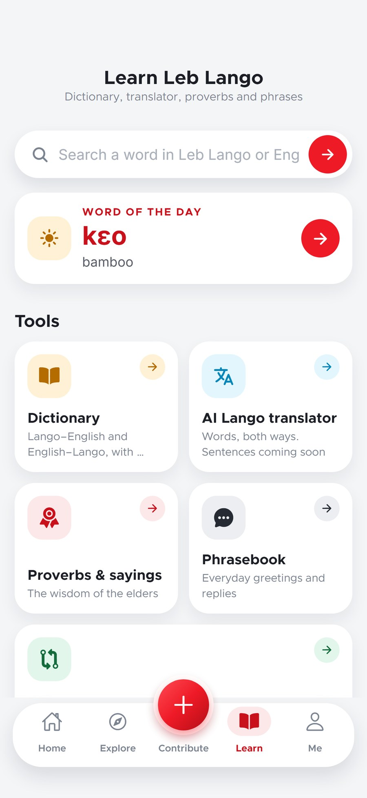
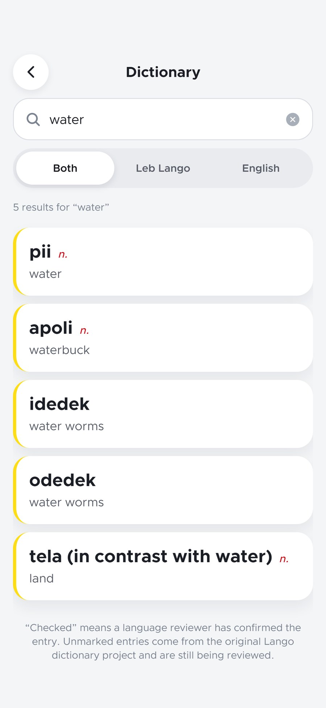
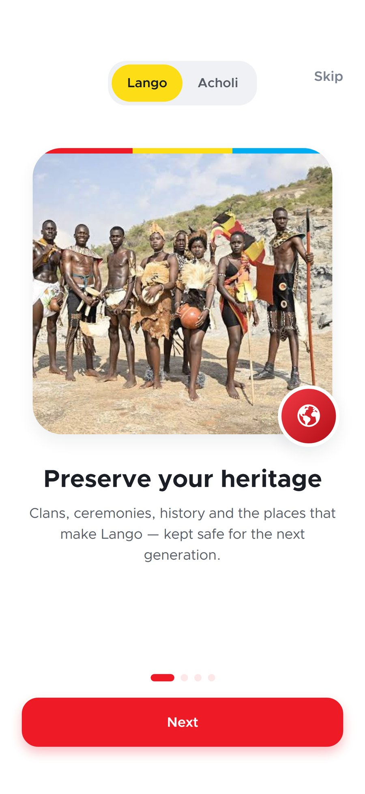

9:41

9:41

9:41
For the clan heads (Owitong) and the leaders of Lango
The language, clans and heritage of Lango, kept for the next generation.
MyCulture is a free app and website where Lango people can learn Leb Lango, find their clan and add what the elders know, with a way for Lango people to check every entry before it is called true. It has been built and is being tested now. We bring it to you first, so that it is guided by those whose culture it keeps.
Free to useNo advertisingMarked until checkedDictionary works offlineBuilt and in testing
2,830words in the dictionary
25clans listed so far
30heritage entries
0clans or heritage entries verified yet: that is where you come in
An introduction for the clan heads and the leaders of Lango · Kakebe Technologies Limited, Lira City1 / 7